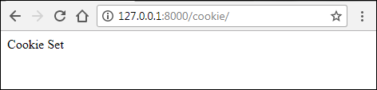
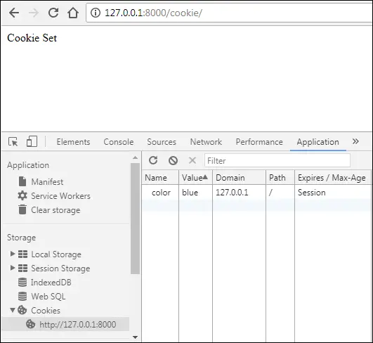
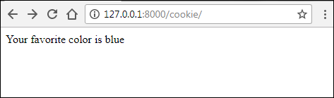
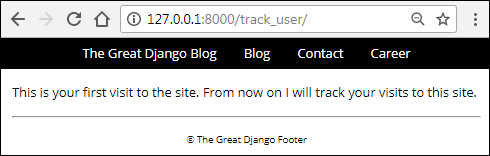
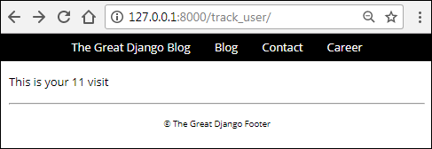
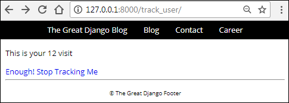
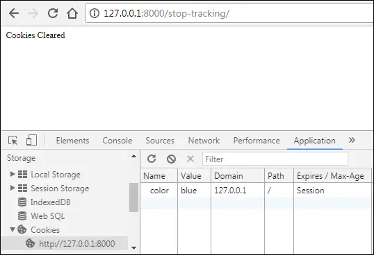

Cookies in Django
Last updated on July 27, 2020
HTTP is a stateless protocol. In other words, when a request is sent to the server, it has no idea whether you are requesting the page for the first time or you are the same person who has visited this page thousand times before. This lack of statelessness was a big problem among developers of an e-commerce website because persistence among request could be used to recommend products or display products in a shopping cart. To mitigate this problem Cookie was invented.
Cookie was first implemented by a programmer named Louis Montulli in 1994 at Netscape Communications in their Netscape Browser.
What is Cookie? #
A cookie is a small piece of data stored in the user's browser which is sent by the server. They are commonly used to store user preferences.
This is how cookies work in general:
- The browser sends the request to the server.
- The server sends the response along with one or more cookie to the browser.
- The browser saves the cookie it received from the server. From now on, the browser will send this cookie to the server, every time a request is made to the server. The browser will keep sending the cookie to the server along with each request until the cookie expires.
- When the cookie expires, it is removed from the browser.
Creating Cookies #
We can create cookies using the set_cookie() method of the request object. The syntax of the method is:
Syntax: set_cookie(name, value, max_age=None)
name: name of the cookievalue: value you want to store in the cookiemax_age: age of the cookie in seconds. After that, it will expire. It is an optional argument, if not given then the cookie will exist until the browser is closed.
Reading cookies #
Every request object in Django has a COOKIE attribute which acts like a dictionary. We can use COOKIE to access a cookie value like this:
request.COOKIE['cookie_name']
When you read cookie data, it will be returned as strings. That means, even if you store an integer 100 in a cookie, it will be returned as '100'.
To make things more concrete let's take an example:
Open blog app's views.py and append the test_cookies() view to the end of the file:
TGDB/django_project/blog/views.py
1 2 3 4 5 6 7 8 9 10 11 | #...
def feedback(request):
#...
def test_cookie(request):
if not request.COOKIES.get('color'):
response = HttpResponse("Cookie Set")
response.set_cookie('color', 'blue')
return response
else:
return HttpResponse("Your favorite color is {0}".format(request.COOKIES['color']))
|
Open blog's urls.py and add the following URL pattern at the beginning of urlpatterns list.
TGDB/django_project/blog/urls.py
1 2 3 4 5 6 | #...
urlpatterns = [
url(r'^cookie/$', views.test_cookie, name='cookie'),
url(r'^feedback/$', views.feedback, name='feedback'),
#...
]
|
Here is how the above code works:
The first time you send a request to http://127.0.0.1:8000/cookie/, the code inside the if block is executed and the server sends the response along with a cookie named "color" to the browser. We are not setting max_age here, so the cookie will last until the browser is closed. To make it last longer, we can specify the time in seconds like this:
response.set_cookie('color', 'blue', 3600 * 24 * 365 * 2)
Here the cookie expiry time is 3600 * 24 * 365 * 2 = 63072000 seconds or 2 years.
With the cookie set in the browser, each subsequent request to http://127.0.0.1:8000/cookie/(or any other pages of http://127.0.0.1:8000/), will send the cookie to the server.
When the browser sends the cookie to the server, we can access it using the server side code. This is essentially what are doing in the else block of the test_cookie() view function.
Point your browser to http://127.0.0.1:8000/cookie/, you should see a page like this:

To view the cookie sent by the server, follow these steps in Google Chrome.
- Hit Ctrl+Shift+J, this will open Developer Console.
- Click the Application tab, on the left-hand pane, Under Storage click Cookies. To view all cookies from
http://127.0.0.1:8000clickhttp://127.0.0.1:8000and you should see our color cookie like this:

Notice that Expires/Max-Age is set to Session, which means cookie will last until the browser is closed.
Refresh the page, this will send the request along with the cookie(received from the server in the previous request) to the server. Response from the server should look like this:

Although the above example is trivial, nonetheless it perfectly illustrates how cookies work.
With the help of cookie now we can solve the problem of statelessness of HTTP. In the following section, we are creating a view which will track the user how many times he/she visits the site.
A view to count the visits #
Open blog's views.py file and add the following view to the end of the file.
TGDB/django_project/blog/views.py
1 2 3 4 5 6 7 8 9 10 11 12 13 14 | #...
def test_cookie(request):
#...
def track_user(request):
if not request.COOKIES.get('visits'):
response = HttpResponse("This is your first visit to the site. "
"From now on I will track your vistis to this site.")
response.set_cookie('visits', '1', 3600 * 24 * 365 * 2)
else:
visits = int(request.COOKIES.get('visits')) + 1
response = HttpResponse("This is your {0} visit".format(visits))
response.set_cookie('visits', str(visits), 3600 * 24 * 365 * 2)
return response
|
After that, add the following URL pattern to the beginning urlpatterns list in blog's urls.py file.
TGDB/django_project/blog/urls.py
1 2 3 4 5 6 | #...
urlpatterns = [
url(r'^track_user/$', views.track_user, name='track_user'),
url(r'^cookie/$', views.test_cookie, name='cookie'),
#...
]
|
Here are few important points about this view:
- Unlike the previous example, we are updating the value of the cookie and sending it to the browser every time the user visits the site, which is necessary otherwise we wouldn't be able to count visits made by the user.
- Every time the user visits
http://127.0.0.1:8000/track_user/, we are updating cookie expiry date as well, which starts from that request.
In the above example, we are creating response directly using HttpResponse() class. The following is the re-write of the track_user() view using a template named track_user.html.
TGDB/django_project/blog/views.py
1 2 3 4 5 6 7 8 9 | #...
def track_user(request):
response = render(request, 'blog/track_user.html') # store the response in response variable
if not request.COOKIES.get('visits'):
response.set_cookie('visits', '1', 3600 * 24 * 365 * 2)
else:
visits = int(request.COOKIES.get('visits', '1')) + 1
response.set_cookie('visits', str(visits), 3600 * 24 * 365 * 2)
return response
|
TGDB/django_project/blog/templates/blog/track_user.html
1 2 3 4 5 6 7 8 9 10 11 12 13 14 15 16 17 18 19 20 21 22 23 | {% extends "blog/base.html" %}
{% block title %}
Tracking User - {{ block.super }}
{% endblock %}
{% block content %}
<div class="content">
<div class="section-inner clearfix">
{% if not request.COOKIES.visits %}
<p>This is your first visit to the site. From now on I will track your visits to this site.</p>
{% else %}
<p>
This is your {{ request.COOKIES.visits|add:'1' }} visit
</p>
{% endif %}
</div>
</div>
{% endblock %}
|
The only new thing in the template is the add filter (line 16). The add filter increments the value of the variable by the specified amount. Its syntax is:
Syntax: variable|add:"value"
But why we are incrementing the value of request.COOKIES.visits by 1?
Because Unlike the previous definition here we are not creating HttpResponse response after testing value of request.COOKIES.get('visits'). As a result, the new updated value of visits cookie will not be available to us until the next request.
Here is how the above code works:
When use visits the page http://127.0.0.1:8000/track_user/ for the first time, the if statement inside the track_user() is executed and it creates a cookie named visits with the value the of 1.
When the user visits http://127.0.0.1:8000/track_user/ for the second time, the browser sends the cookie (with the value of 1) to the server. Then the render() method is called to create a response(line 3). Inside the template request.COOKIES.visits still contains 1, although this the user's second visit. To circumvent this issue we have added the add filter.
To see the track_user() view in action visit http://127.0.0.1:8000/track_user/. On the first visit, you will get a response like this:

Visit the same page a few times more and you will get a response like this:

Deleting a Cookie #
To delete a cookie simply call delete_cookie() method of the response object with the name of the cookie to delete.
Syntax: response.delete_cookie(cookie_name)
Let's give our user's an option to disable tracking.
Open views.py and add the stop_tracking() view at the end of the file.
TGDB/django_project/blog/views.py
1 2 3 4 5 6 7 8 9 10 11 | #...
def track_user(request):
#...
def stop_tracking(request):
if request.COOKIES.get('visits'):
response = HttpResponse("Cookies Cleared")
response.delete_cookie("visits")
else:
response = HttpResponse("We are not tracking you.")
return response
|
Next, add the following URL pattern just above URL named track_user.
TGDB/django_project/blog/urls.py
1 2 3 4 5 6 | #...
urlpatterns = [
url(r'^stop-tracking/$', views.stop_tracking, name='stop_tracking'),
url(r'^track_user/$', views.track_user, name='track_user'),
#...
]
|
In the track_user.html template add a link to stop tracking just below the if tag.
TGDB/django_project/blog/templates/blog/track_user.html
1 2 3 4 5 6 7 8 9 10 11 12 13 14 15 16 17 | {# ... #}
<div class="content">
<div class="section-inner clearfix">
{% if not request.COOKIES.visits %}
<p>This is your first visit to the site. From now on I will track your visits to this site.</p>
{% else %}
<p>
This is your {{ request.COOKIES.visits|add:'1' }} visit
</p>
{% endif %}
<a href="{% url 'stop_tracking' %}">Enough! Stop Tracking Me</a>
</div>
</div>
{# ... #}
|
Visit http://127.0.0.1:8000/track_user/ and you should see a link "Enough! Stop Tracking Me" like this:

Click the link to delete visits cookie. To verify the cookie has been deleted, in Chrome open JavaScript Console by hitting Ctrl+Shift+J and click on Application tab.

As you can see, indeed our visits cookie has been deleted. In my case, the color cookie still exists because I haven't closed the browser since the color cookie is set.
Now you should have a better idea of how to use cookie and situations in which they can be useful. However, there are few things to watch out for before you start using them in your projects:
- Never ever use cookies to store sensitive data like passwords. Cookies store data in plain text, as a result, anybody can read/modify them.
- Most browsers don't allow cookies to store more than 4KB of data (i.e 4KB for each cookie). Further most browsers accept no more than 30 cookies per website. Actually, the exact number of cookies per website vary from browser to browser click here for more details.
- Recall that once the cookie is set in the browser, it will be sent along with each request to the server. Let's say we have added 20 cookies each of size 4KB, that comes out to be 80KB. That means with every request to the server the browser would need to send 80KB of additional data with every request!
- Users can delete the cookies at their will.
- The user can even configure their browsers to not accept cookies at all.
Some of these problems can be solved by using sessions which is discussed in the next chapter.
Note: To checkout this version of the repository type git checkout 27a.
Load Comments